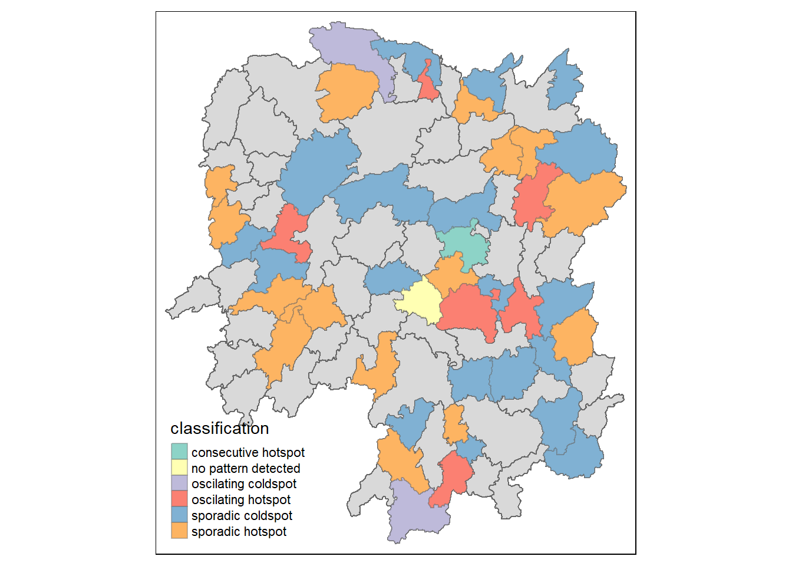

pacman::p_load( sf, sfdep, tmap, tidyverse, plotly)In-class_Ex2A: Emerging Hot Spot Analysis: sfdep methods
1 Overview
Emerging Hot Spot Analysis (EHSA) is a spatio-temporal analysis method for revealing and describing how hot spot and cold spot areas evolve over time. The analysis consist of four main steps:
Building a space-time cube,
Calculating Getis-Ord local Gi* statistic for each bin by using an FDR correction,
Evaluating these hot and cold spot trends by using Mann-Kendall trend test,
Categorising each study area location by referring to the resultant trend z-score and p-value for each location with data, and with the hot spot z-score and p-value for each bin.
2 Getting started
2.1 Installing and Loading the R Packages
As usual, p_load() of pacman package will be used to check if the necessary packages have been installed in R, if yes, load the packages on R environment.
Five R packages are need for this in-class exercise, they are: sf, sfdep, tmap, plotly and tidyverse.
3 The Data
For the purpose of this in-class exercise, the Hunan data sets will be used. There are two data sets in this use case, they are:
Hunan, a geospatial data set in ESRI shapefile format, and
Hunan_GDPPC, an attribute data set in csv format.
Before getting started, reveal the content of Hunan_GDPPC.csv by using Notepad and MS Excel.
3.1 Importing geospatial data
In the code chunk below, st_read() of sf package is used to import Hunan shapefile into R.
hunan <- st_read(dsn = "data/geospatial",
layer = "Hunan")Reading layer `Hunan' from data source
`W:\widyayutika\ISSS624\In-class_Exercise\In-class_Ex2\data\geospatial'
using driver `ESRI Shapefile'
Simple feature collection with 88 features and 7 fields
Geometry type: POLYGON
Dimension: XY
Bounding box: xmin: 108.7831 ymin: 24.6342 xmax: 114.2544 ymax: 30.12812
Geodetic CRS: WGS 843.2 Importing attribute table
In the code chunk below, read_csv() of readr is used to import Hunan_GDPPC.csv into R.
GDPPC <- read_csv("data/aspatial/Hunan_GDPPC.csv")4 Creating a Time Series Cube
Before getting started, students must read this article to learn the basic concept of spatio-temporal cube and its implementation in sfdep package.
In the code chunk below, spacetime() of sfdep is used to create an spacetime cube.
GDPPC_st <- spacetime(GDPPC, hunan,
.loc_col = "County",
.time_col = "Year")Next, is_spacetime_cube() of sfdep package will be used to varify if GDPPC_st is indeed an space-time cube object.
is_spacetime_cube(GDPPC_st)[1] TRUEThe TRUE return confirms that GDPPC_st object is indeed an time-space cube.
4.1 Deriving the spatial weights
The code chunk below will be used to identify neighbors and to derive an inverse distance weights.
GDPPC_nb <- GDPPC_st %>%
activate("geometry") %>%
mutate(nb =include_self(st_contiguity(geometry)),
wt = st_inverse_distance(nb,geometry,
scale = 1,
alpha=1),
.before = 1) %>%
set_nbs("nb") %>%
set_wts("wt")
Things to learn from the code chunk above
activate()of dplyr package is used to activate the geometry contextmutate()of dplyr package is used to create two new columns nb and wt.Then we will activate the data context again and copy over the nb and wt columns to each time-slice using
set_nbs()andset_wts()- row order is very important so do not rearrange the observations after using
set_nbs()orset_wts().
- row order is very important so do not rearrange the observations after using
Note that this dataset now has neighbors and weights for each time-slice.
head(GDPPC_nb)# A tibble: 6 × 5
Year County GDPPC nb wt
<dbl> <chr> <dbl> <list> <list>
1 2005 Anxiang 8184 <int [6]> <dbl [6]>
2 2005 Hanshou 6560 <int [6]> <dbl [6]>
3 2005 Jinshi 9956 <int [5]> <dbl [5]>
4 2005 Li 8394 <int [5]> <dbl [5]>
5 2005 Linli 8850 <int [5]> <dbl [5]>
6 2005 Shimen 9244 <int [6]> <dbl [6]>4.2 Computing Gi*
We can use these new columns to manually calculate the local Gi* for each location. We can do this by grouping by Year and using local_gstar_perm() of sfdep package. After which, we use unnest() to unnest gi_star column of the newly created gi_starts data.frame.
gi_stars <- GDPPC_nb %>%
group_by(Year) %>%
mutate(gi_star = local_gstar_perm(
GDPPC, nb, wt)) %>%
tidyr::unnest(gi_star)5 Performing Emerging Hotspot Analysis
Lastly, we will perform EHSA analysis by using emerging_hotspot_analysis() of sfdep package. It takes a spacetime object x (i.e. GDPPC_st), and the quoted name of the variable of interest (i.e. GDPPC) for .var argument. The k argument is used to specify the number of time lags which is set to 1 by default. Lastly, nsim map numbers of simulation to be performed.
ehsa <- emerging_hotspot_analysis(
x = GDPPC_st,
.var = "GDPPC",
k = 1,
nsim = 99
)5.1 Visualising EHSA
In this section, you will learn how to visualise the geographic distribution EHSA classes. However, before we can do so, we need to join both hunan and ehsa together by using the code chunk below.
hunan_ehsa <-hunan %>%
left_join(ehsa,
by= join_by(County==location))Next, tmap functions will be used to plot a categorical choropleth map by using the code chunk below.
ehsa_sig <- hunan_ehsa %>%
filter(p_value <0.05)
tmap_mode("plot")
tm_shape(hunan_ehsa) +
tm_polygons()+
tm_borders(alpha=0.5)+
tm_shape(ehsa_sig)+
tm_fill('classification')+
tm_borders(alpha=0.4)